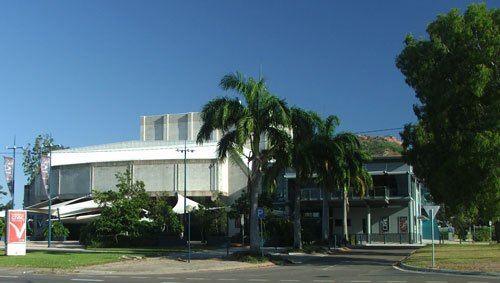

The Great History

The Townsville Community Centre began in early 1983 when a group of people with a shared interest in musical matters decided to address the local paucity in musical opportunities. An early objective of the centre was to encourage the establishment of tertiary music education in Townsville, and provide classes, courses, and workshops in a variety of musical styles, levels, instruments and experiences.
The Centre ran a significant concert program for many years and promoted emerging musicians. Reflecting the Centre's increasing workload as an information and referral service, this collection includes documents on concerts, training, instruments, musicians, sheet music, performance and rehearsal spaces, functions and events, sources for grants and funding, legal matters, continuing professional development of local musicians, and integrating overseas professional musicians with local community musicians.
1983The Townsville Community Music Centre was established at a public meeting on May 24th. Then Deputy Mayor, Ken McElligott, opened the meeting and presented a cheque for $50 from the City Council to cover initial petty cash, the Centre's first funds. At the meeting an executive committee was formed. Over the next few weeks that committee drafted a constitution which was endorsed at another public meeting on June 15th. Fred Thompson was Chairman from September 1983, with Gordon Dean as his Deputy and Jan Eagleton as Secretary.
1984Mira Henderson, who had extensive experience in community music work in England, was the first staff member. (Her position was Acting Director because she was only in Townsville for a brief spell.) She instigated a series of classes starting in 1984 using the skills of people living in Townsville to enhance and encourage music learners of all ages.
1985Kirsty Veron was appointed as the first Director. Kirsty was very interested in teaching music to children and had worked with Mira in the 1983 classes. She held this position until 1988 leading the new organisation into a strong position in the Townsville arts community.
1985The Music Centre produced Benjamin Britten's Noyes Fludde in St James Anglican Cathedral. This involved hundreds of children and some of Townsville's best known (and loved) musicians. It was produced by Rachel Berker (now Rachel Matthews) and involved Bernie Lannigan and Sandra Voss in the main parts rehearsed by Bill Williams; Donna McMahon and Jenny Carr rehearsing the strings and recorders and guest conductor Donald Hollier. This was by the no means the only major production mounted by the Music Centre but was probably the largest.
1987This was the year of the first fund raising dinner. These dinners became a tradition as they were a wonderful mixture of good food, good wine and good music. The first ones were held at the home of Paul and June Tonnoir in North Ward. Later they moved to the Bishop's Lodge as guests of the Anglican Bishop. Attendees would often book their tickets for the next year's dinner as soon as they had attended this one. They ran until 2004.
1988Mary Lou Schoenfeldt was appointed as Administrator. Although this was initially a small part time job with limited responsibilities, Mary Lou made the job, the Centre and indeed music in Townsville, her own. She was a wonderful asset to the Centre and to the cultural life of the City until she had to retire due to ill health in 2003.
1990This year the first lunchtime concert was held at the PercTucker Gallery. The importance of providing performance opportunities for emerging musicians had become evident and from this time, for a number of years, one of the major activities of the Centre was the production and management of concerts.
1999Arts Queensland had been a major funder of Music Centre activities for a number of years but in this year they agree to provide funding on a three year basis. This made it much easier for the Centre to plan ahead and reduced the time that had to be spent on repetitive grant applications. This arrangement ran until 2004.
2003
A spectacular variety concert was held at the Townsville Civic Theatre to celebrate twenty years of the Music Centre and as a tribute to May Lou.
2005The Centre moved to offices in the Old Magistrate's Court. More details of the period 1983 - 2008 can be found in the book, "Townsville Community Music Centre: some memories of the first 25 years" by Jean Dartnall. (Copies available from the Music Centre)
2012The Centre moved to its present office in the Townsville Civic Theatre building.
Sponsors
 Townsville City Council
Townsville City Council
The Council's Partnerships and Sponsorships scheme provides vital core funding which enables us to maintain the administrative base for all our other activities, and also provides the premises which house our office space.
The Council also assists with the performance venues for our concerts and workshops.

 Queensland Government
Queensland Government
The Gambling Community Benefit Fund has assisted us to obtain office equipment and sound and lighting equipment for our productions.